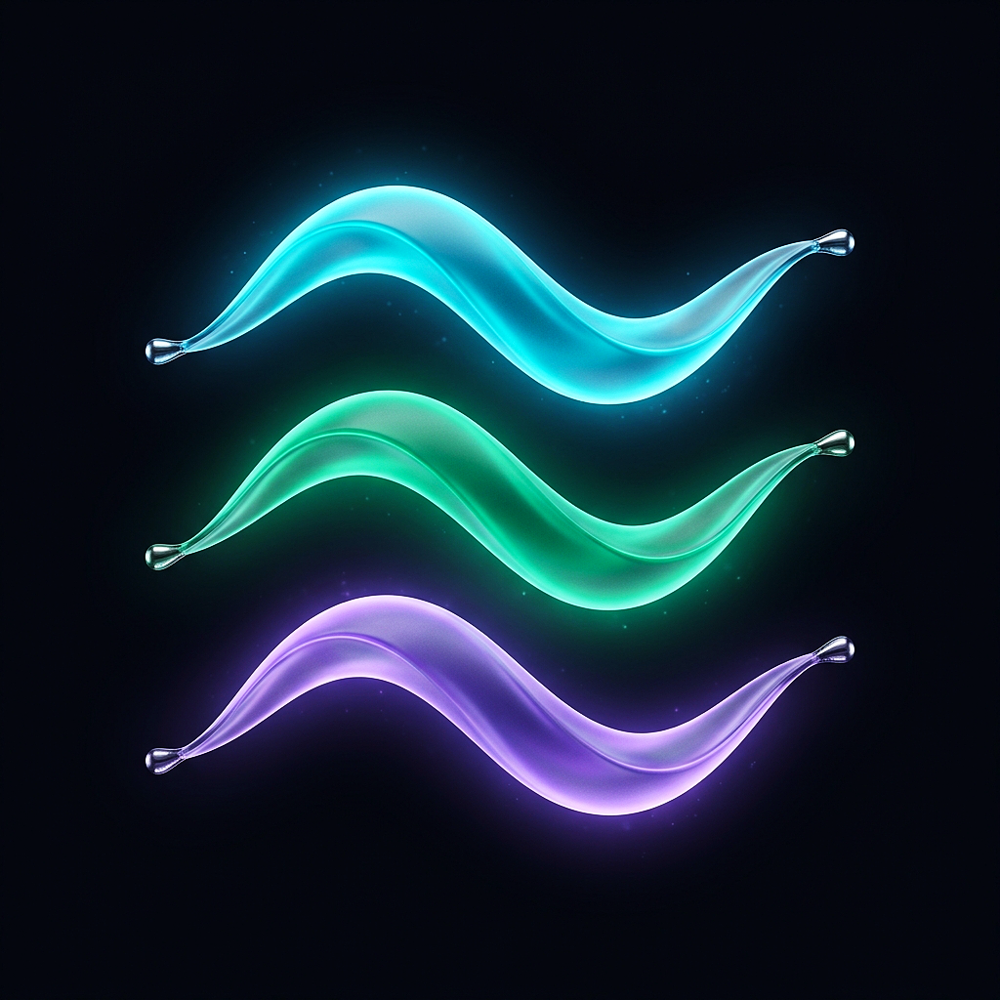
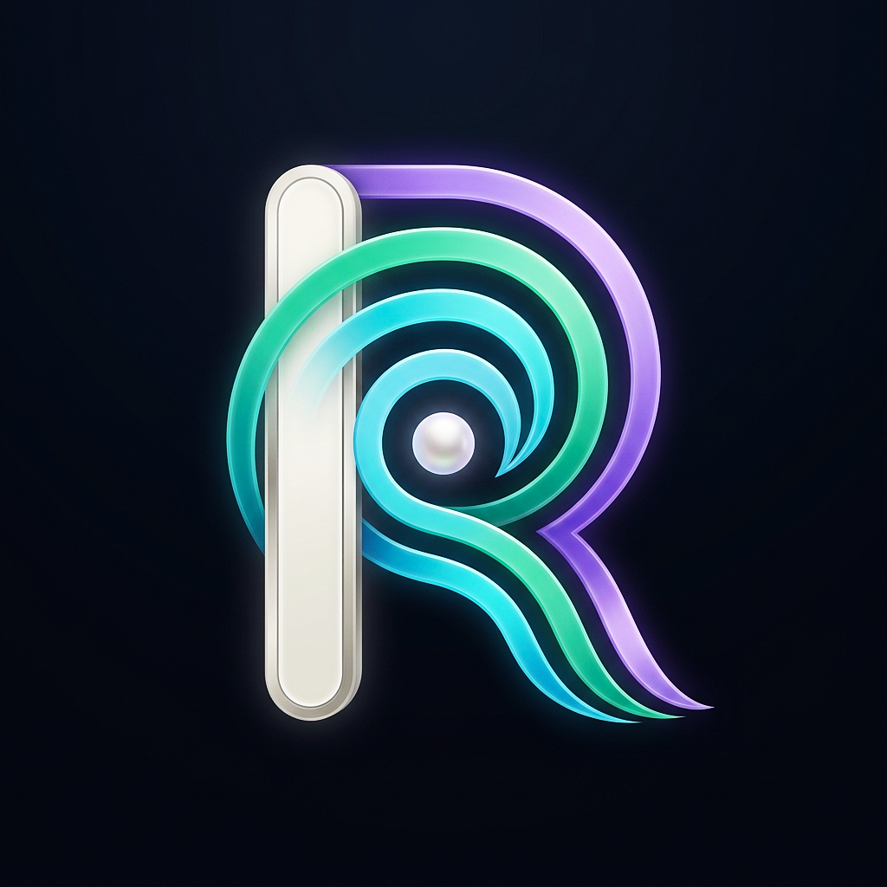
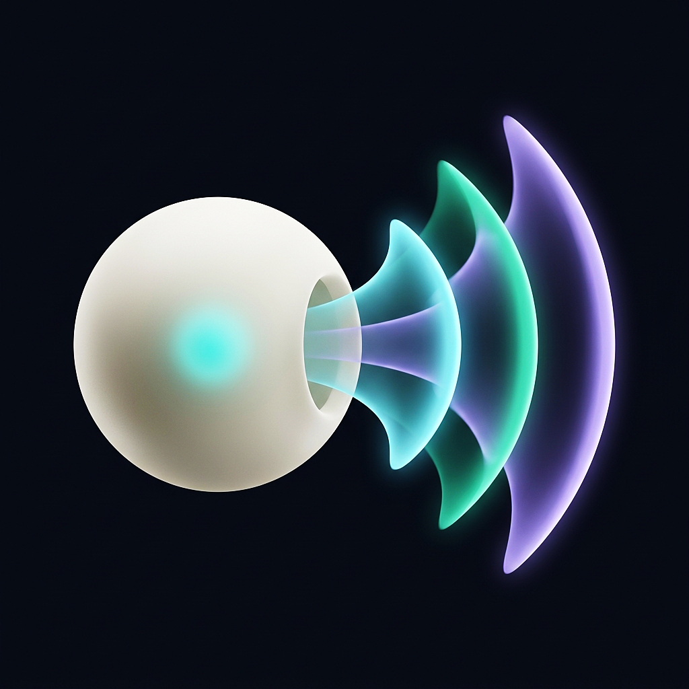
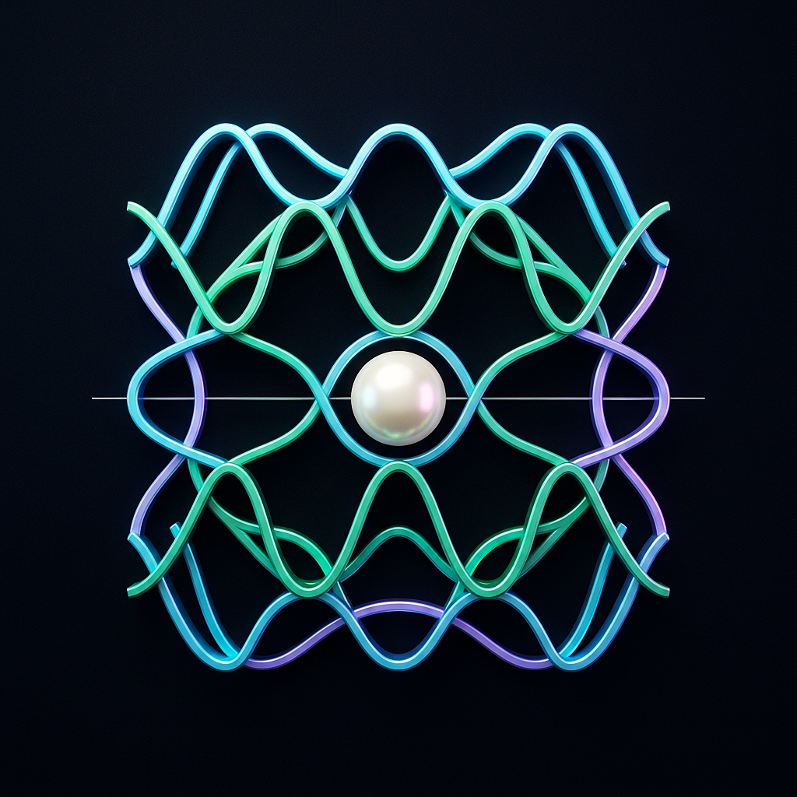

O Ressonador Canônico
A fusão simétrica entre a câmara de ressonância acústica e as ondas de Fourier. Três fitas de luz sinestésica fluem no interior de um corpo usinado em obsidiana mate, convergindo harmonicamente ao redor de uma pérola central de marfim acústico polido.

As Três Fitas do Etwahl
Minimalismo orgânico sem anel de contenção exterior. Três ondas tridimensionais esculpidas em vidro translúcido flutuam livremente no vácuo acústico, ancoradas por pingentes de afinação cromados nas extremidades que definem a frequência de cada tom.

A Concha Harmônica ("R")
Lettermark tipográfico e arquitetura biológica. A coluna vertical em marfim fosco representa a linha de leitura do documento (o cursor do motor Rust), enquanto as três ondas acústicas curvam-se em laços que formam simultaneamente a letra "R" e uma cóclea auditiva.

A Fenda de Helmholtz
Representação escultural da voz nascendo do silêncio. Uma esfera acústica em cerâmica marfim fosca abriga o silêncio da leitura e pulsa internamente em turquesa; pela sua fenda calibrada, projeta-se um feixe volumétrico em leque harmônico.

O Espectro Geométrico
Racionalismo matemático e física ondulatória. Inspirado nas figuras nodais de Chladni e na sinalética da escola de Ulm (Otl Aicher), ondas senoidais tridimensionais cruzam-se sobre a linha guia horizontal DIN gerando um padrão de ressonância perpétua.